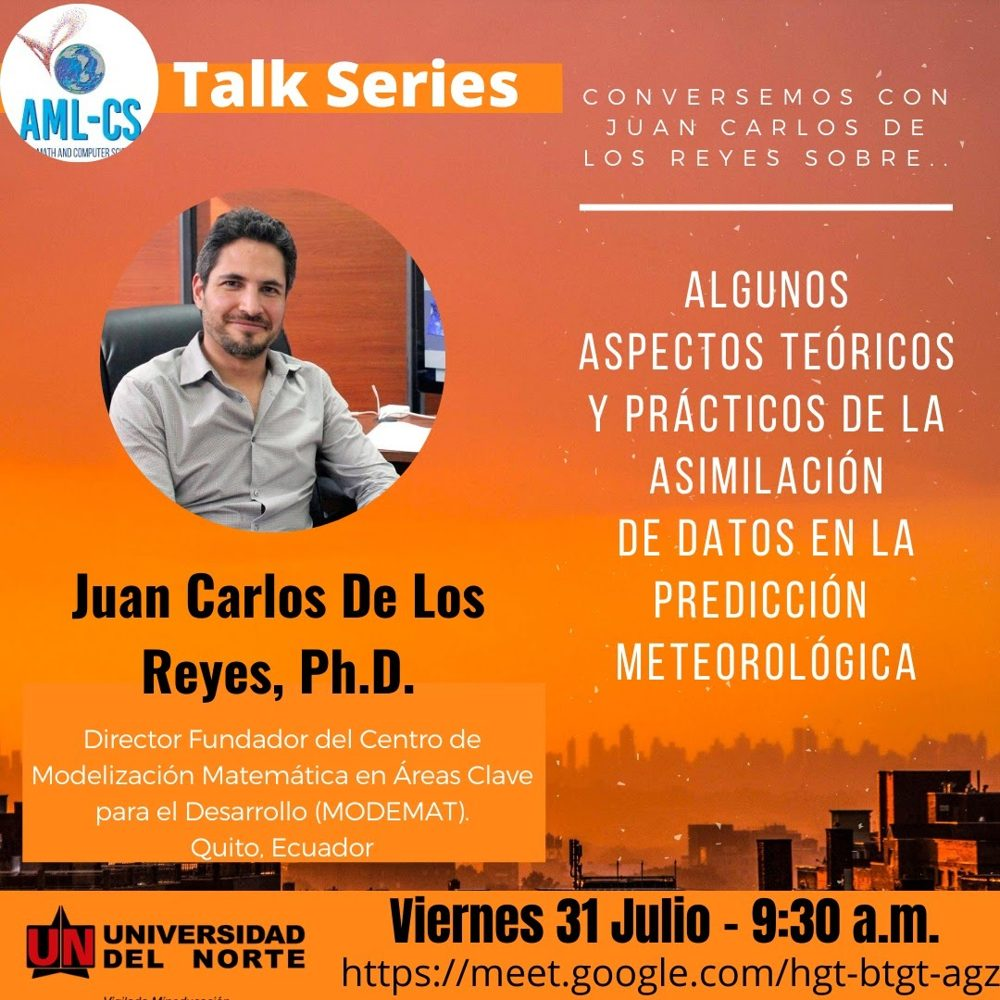
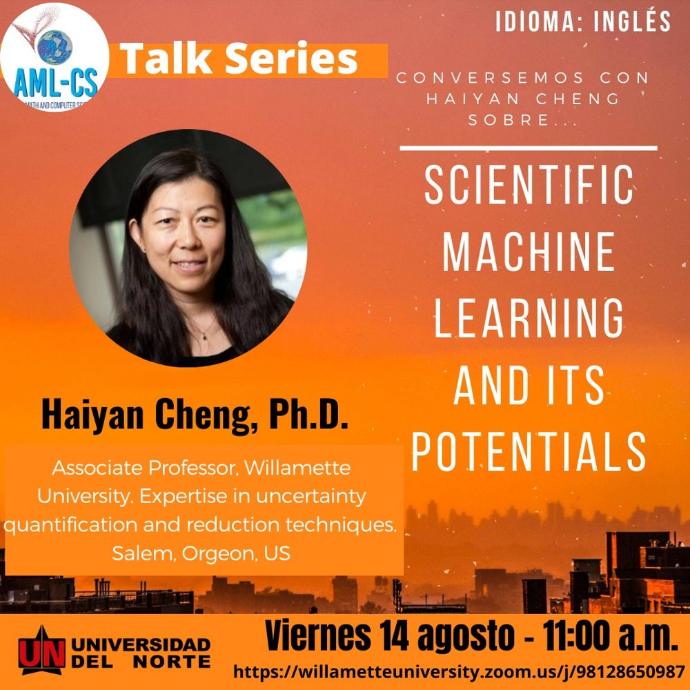
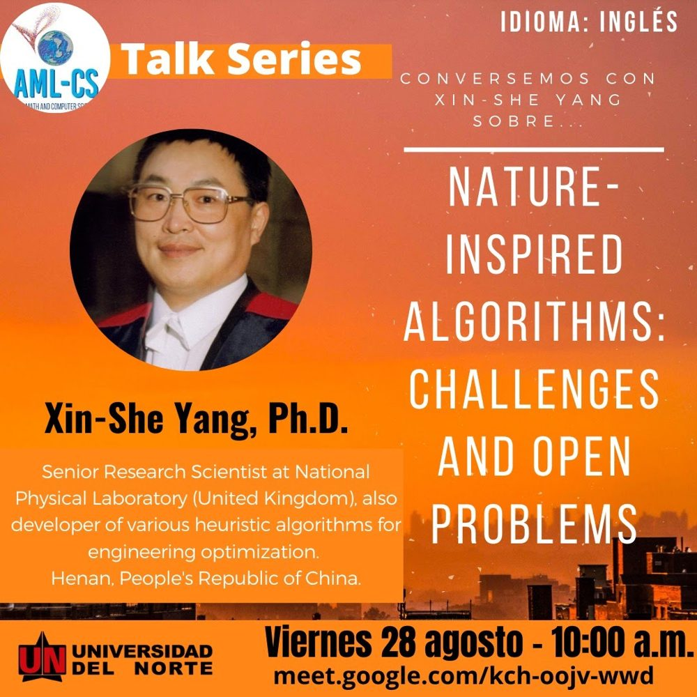
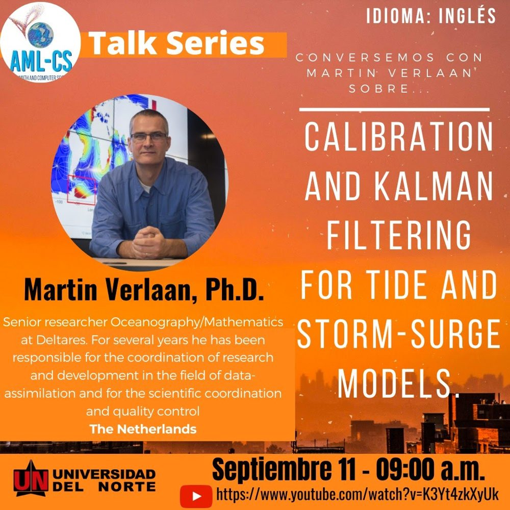
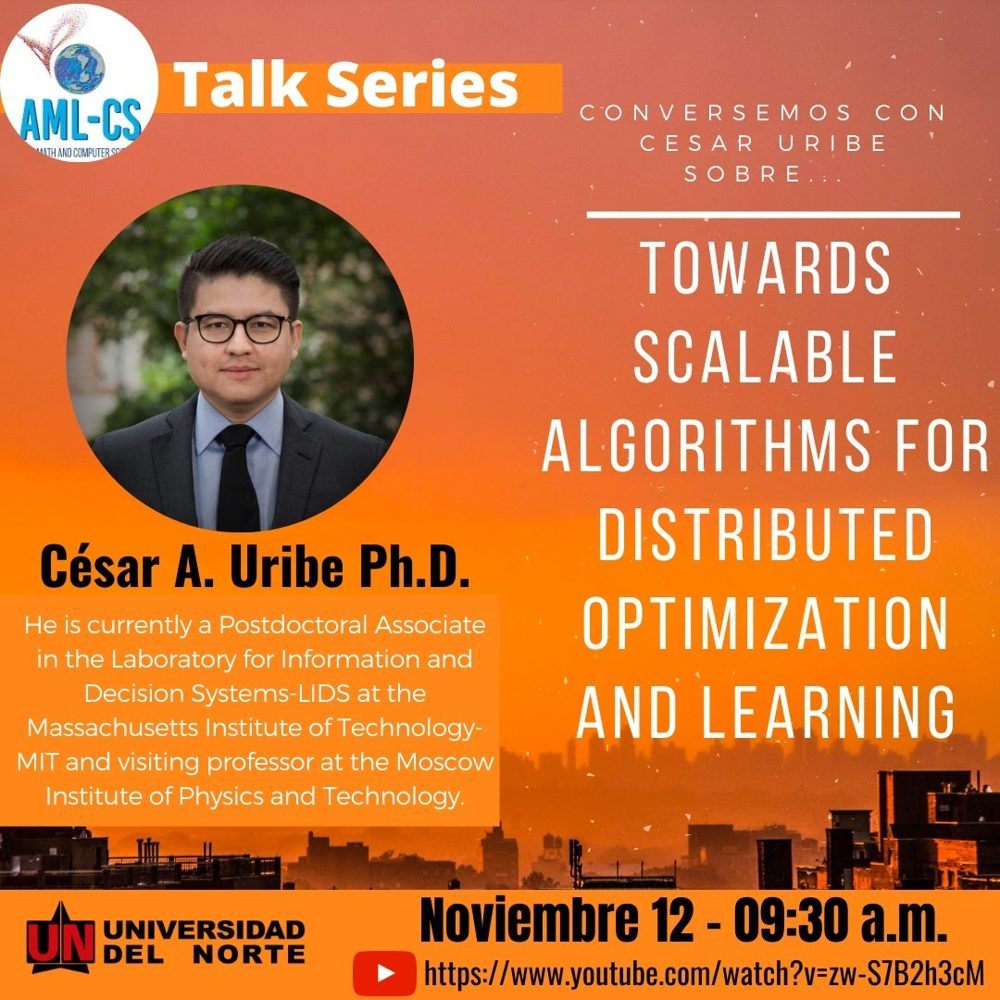
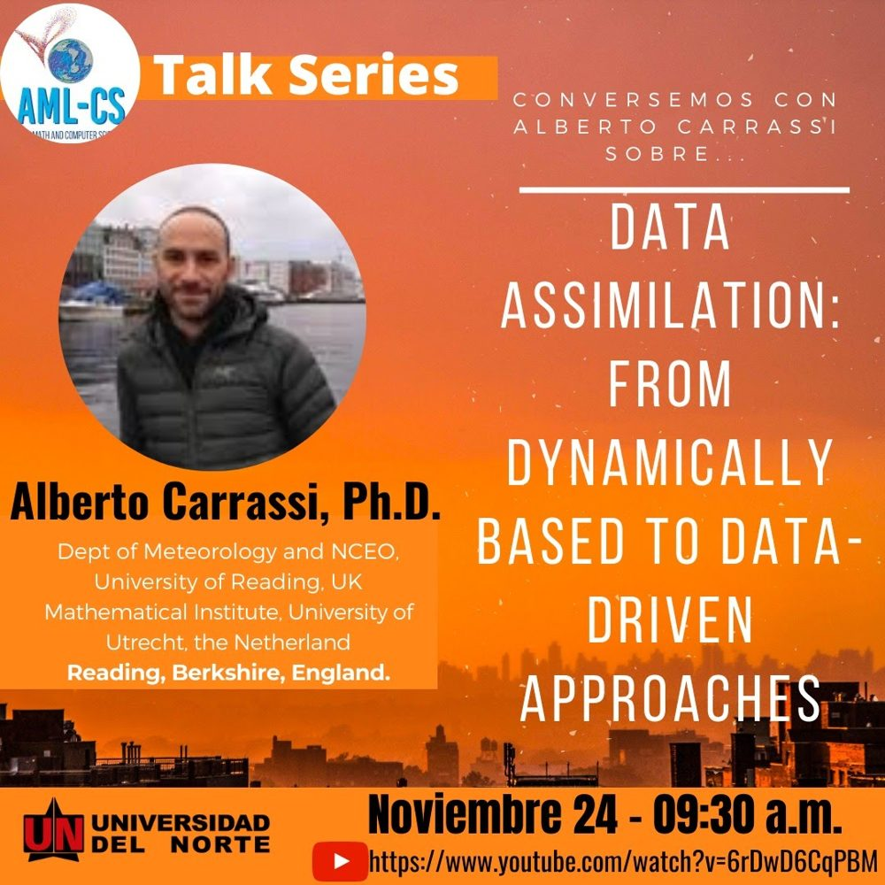
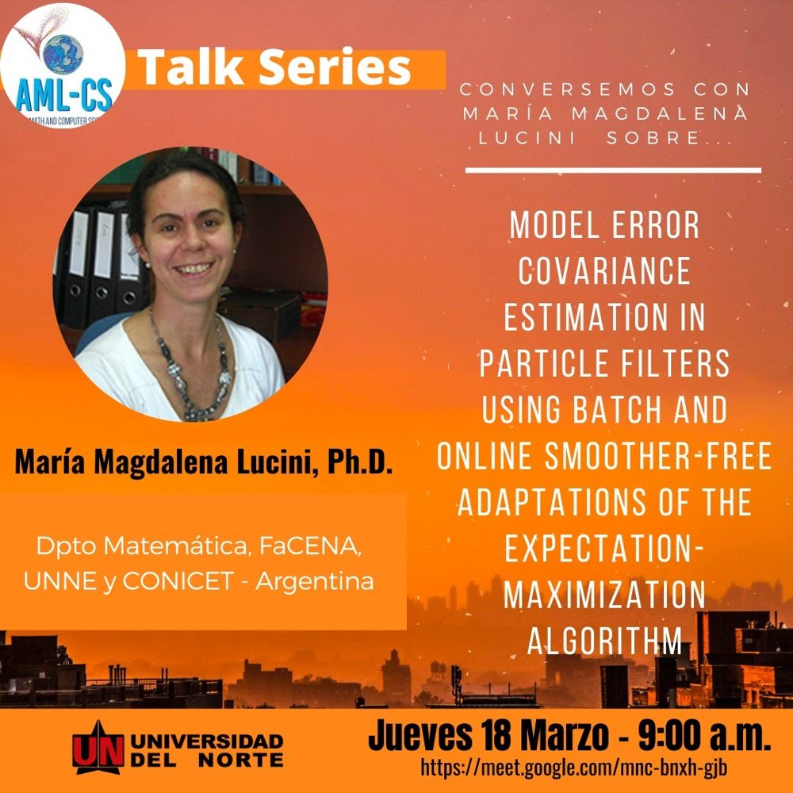
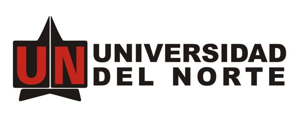
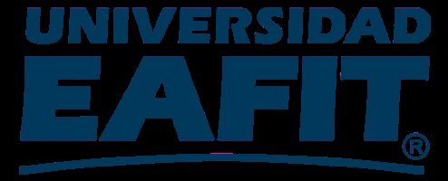

Recorded talks by the lab and its guests, workshops we organise, and calls for papers.
An online series of invited talks hosted by the lab in 2020–2021. Recordings where available.

31 Jul 2020 · Spanish · Recording
Juan Carlos De Los Reyes, Ph.D. · MODEMAT, Ecuador

14 Aug 2020 · English
Haiyan Cheng, Ph.D. · Willamette University, USA

28 Aug 2020 · English · Recording
Xin-She Yang, Ph.D. · National Physical Laboratory / Middlesex University, UK

11 Sep 2020 · English · Recording
Martin Verlaan, Ph.D. · Deltares, The Netherlands

12 Nov 2020 · Spanish · Recording
César A. Uribe, Ph.D. · Massachusetts Institute of Technology, USA

24 Nov 2020 · English · Recording
Alberto Carrassi, Ph.D. · University of Reading, UK / Utrecht University

18 Mar 2021 · Spanish · Recording
María Magdalena Lucini, Ph.D. · FaCENA, UNNE / CONICET, Argentina
By Elias D. Nino-Ruiz.
International Journal of Artificial Intelligence. Topics: data assimilation, inverse problems, uncertainty quantification, data-driven models. Guest editor: Elias D. Nino-Ruiz. Special issue website.
A Surrogate Model Based on Mixtures of Taylor Expansions for Trust Region Based Methods. Zurich, June 2017.
Organised by Universidad del Norte, AML-CS and Universidad EAFIT as part of the Minciencias-funded ExPoR2 programme (SIGP 68747).
Data assimilation adjusts an imperfect numerical forecast according to real, noisy observations. The workshop addressed open issues in the community: efficient implementations of background error covariance estimators, matrix-free ensemble Kalman filters for highly non-linear models, adjoint-free 4D-Var methods, and sampling methods for non-Gaussian data assimilation.

